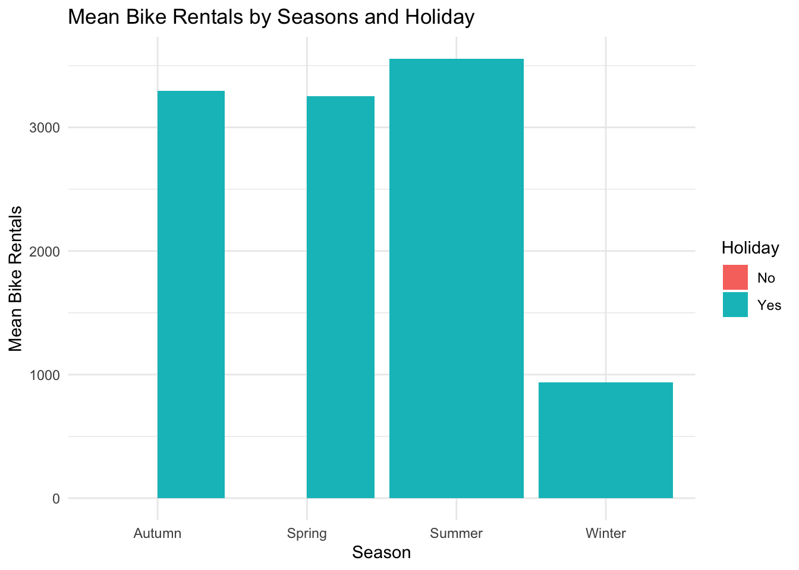
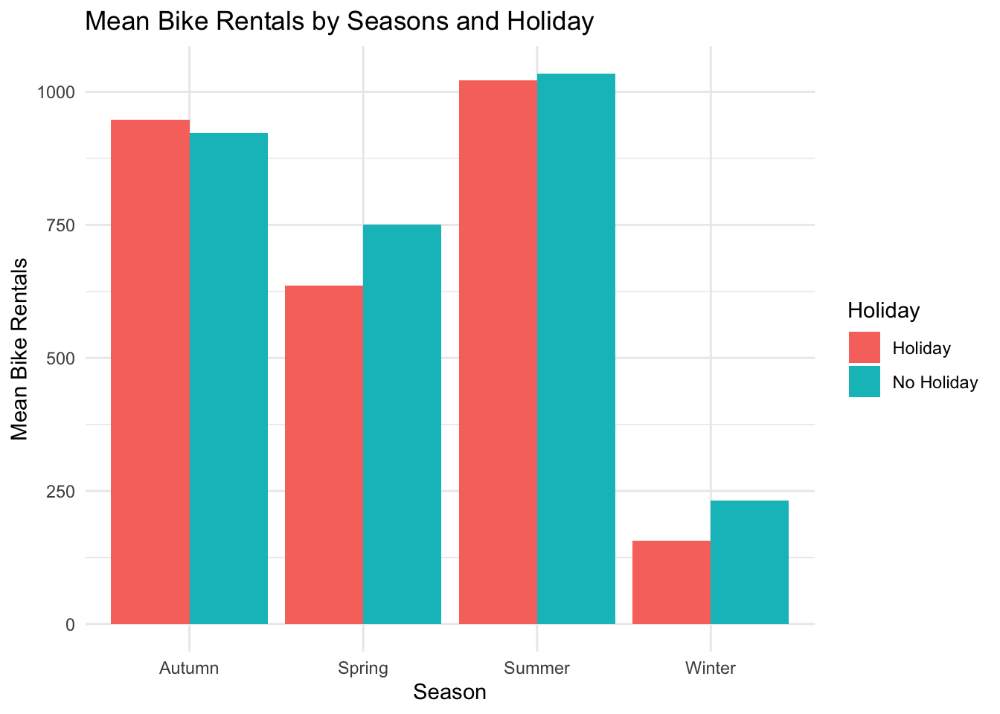
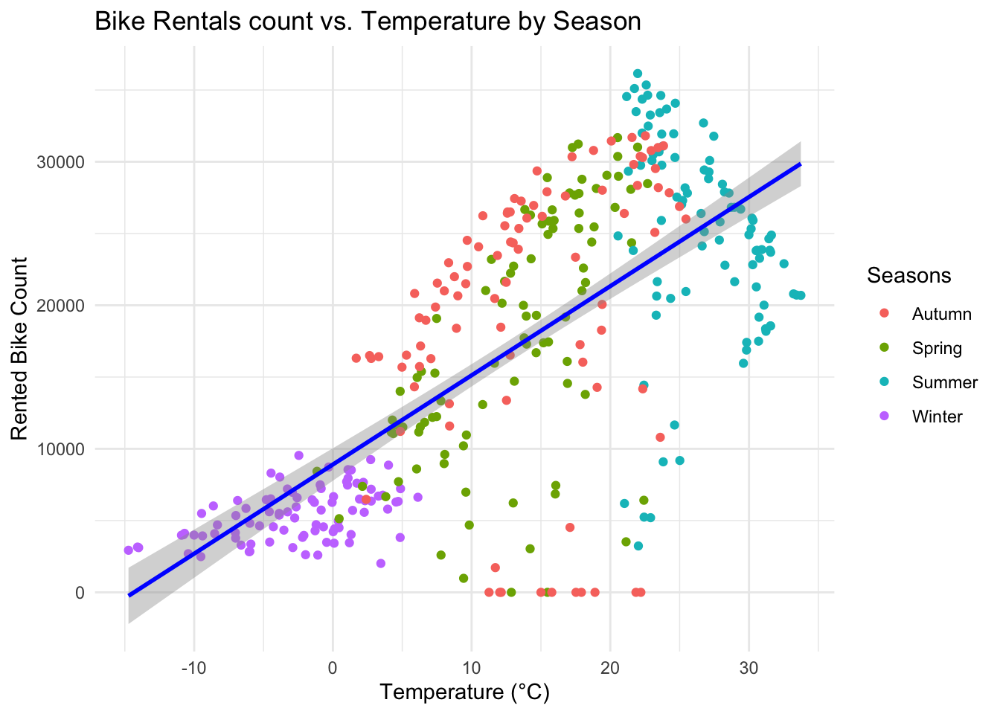
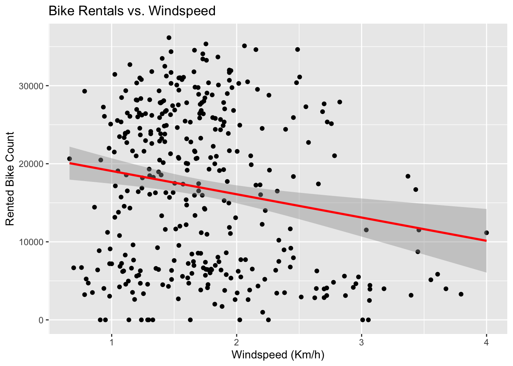
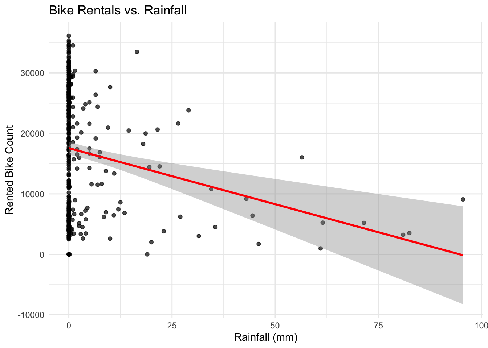
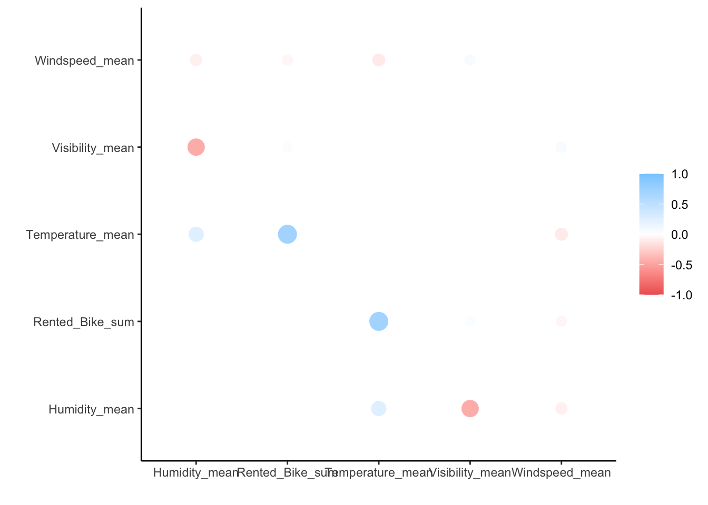

1 + 1[1] 2Quarto enables you to weave together content and executable code into a finished document. To learn more about Quarto see https://quarto.org.
When you click the Render button a document will be generated that includes both content and the output of embedded code. You can embed code like this:
1 + 1[1] 2You can add options to executable code like this
[1] 4The echo: false option disables the printing of code (only output is displayed).
library(readr)
library(tidyverse)── Attaching core tidyverse packages ──────────────────────── tidyverse 2.0.0 ──
✔ dplyr 1.1.4 ✔ purrr 1.0.2
✔ forcats 1.0.0 ✔ stringr 1.5.1
✔ ggplot2 3.5.1 ✔ tibble 3.2.1
✔ lubridate 1.9.3 ✔ tidyr 1.3.1
── Conflicts ────────────────────────────────────────── tidyverse_conflicts() ──
✖ dplyr::filter() masks stats::filter()
✖ dplyr::lag() masks stats::lag()
ℹ Use the conflicted package (<http://conflicted.r-lib.org/>) to force all conflicts to become errorslibrary(lubridate)
library(dplyr)
library(ggplot2)
#install.packages("corrr")
#install.packages("tidymodels")
library(corrr)
library(tidymodels)── Attaching packages ────────────────────────────────────── tidymodels 1.2.0 ──
✔ broom 1.0.6 ✔ rsample 1.2.1
✔ dials 1.3.0 ✔ tune 1.2.1
✔ infer 1.0.7 ✔ workflows 1.1.4
✔ modeldata 1.4.0 ✔ workflowsets 1.1.0
✔ parsnip 1.2.1 ✔ yardstick 1.3.1
✔ recipes 1.1.0
── Conflicts ───────────────────────────────────────── tidymodels_conflicts() ──
✖ scales::discard() masks purrr::discard()
✖ dplyr::filter() masks stats::filter()
✖ recipes::fixed() masks stringr::fixed()
✖ dplyr::lag() masks stats::lag()
✖ yardstick::spec() masks readr::spec()
✖ recipes::step() masks stats::step()
• Search for functions across packages at https://www.tidymodels.org/find/bike_data <- read_csv("https://www4.stat.ncsu.edu/~online/datasets/SeoulBikeData.csv", skip = 1, locale = locale(encoding = "UTF-8"), col_names = FALSE)|>
as_tibble()Rows: 8760 Columns: 14
── Column specification ────────────────────────────────────────────────────────
Delimiter: ","
chr (4): X1, X12, X13, X14
dbl (10): X2, X3, X4, X5, X6, X7, X8, X9, X10, X11
ℹ Use `spec()` to retrieve the full column specification for this data.
ℹ Specify the column types or set `show_col_types = FALSE` to quiet this message.head(bike_data)# A tibble: 6 × 14
X1 X2 X3 X4 X5 X6 X7 X8 X9 X10 X11 X12 X13
<chr> <dbl> <dbl> <dbl> <dbl> <dbl> <dbl> <dbl> <dbl> <dbl> <dbl> <chr> <chr>
1 01/12… 254 0 -5.2 37 2.2 2000 -17.6 0 0 0 Wint… No H…
2 01/12… 204 1 -5.5 38 0.8 2000 -17.6 0 0 0 Wint… No H…
3 01/12… 173 2 -6 39 1 2000 -17.7 0 0 0 Wint… No H…
4 01/12… 107 3 -6.2 40 0.9 2000 -17.6 0 0 0 Wint… No H…
5 01/12… 78 4 -6 36 2.3 2000 -18.6 0 0 0 Wint… No H…
6 01/12… 100 5 -6.4 37 1.5 2000 -18.7 0 0 0 Wint… No H…
# ℹ 1 more variable: X14 <chr>colnames(bike_data) <- c("Date", "Rented_Bike_Count", "Hour", "Temperature","Humidity", "Windspeed", "Visibility","Dew_Point_Temperature", "Solar_Radiation", "Rainfall", "Snowfall", "Seasons", "Holiday", "Functioning_Day")
head(bike_data)# A tibble: 6 × 14
Date Rented_Bike_Count Hour Temperature Humidity Windspeed Visibility
<chr> <dbl> <dbl> <dbl> <dbl> <dbl> <dbl>
1 01/12/2017 254 0 -5.2 37 2.2 2000
2 01/12/2017 204 1 -5.5 38 0.8 2000
3 01/12/2017 173 2 -6 39 1 2000
4 01/12/2017 107 3 -6.2 40 0.9 2000
5 01/12/2017 78 4 -6 36 2.3 2000
6 01/12/2017 100 5 -6.4 37 1.5 2000
# ℹ 7 more variables: Dew_Point_Temperature <dbl>, Solar_Radiation <dbl>,
# Rainfall <dbl>, Snowfall <dbl>, Seasons <chr>, Holiday <chr>,
# Functioning_Day <chr>sum(is.na(bike_data))[1] 0colSums(is.na(bike_data)) Date Rented_Bike_Count Hour
0 0 0
Temperature Humidity Windspeed
0 0 0
Visibility Dew_Point_Temperature Solar_Radiation
0 0 0
Rainfall Snowfall Seasons
0 0 0
Holiday Functioning_Day
0 0 str(bike_data)tibble [8,760 × 14] (S3: tbl_df/tbl/data.frame)
$ Date : chr [1:8760] "01/12/2017" "01/12/2017" "01/12/2017" "01/12/2017" ...
$ Rented_Bike_Count : num [1:8760] 254 204 173 107 78 100 181 460 930 490 ...
$ Hour : num [1:8760] 0 1 2 3 4 5 6 7 8 9 ...
$ Temperature : num [1:8760] -5.2 -5.5 -6 -6.2 -6 -6.4 -6.6 -7.4 -7.6 -6.5 ...
$ Humidity : num [1:8760] 37 38 39 40 36 37 35 38 37 27 ...
$ Windspeed : num [1:8760] 2.2 0.8 1 0.9 2.3 1.5 1.3 0.9 1.1 0.5 ...
$ Visibility : num [1:8760] 2000 2000 2000 2000 2000 ...
$ Dew_Point_Temperature: num [1:8760] -17.6 -17.6 -17.7 -17.6 -18.6 -18.7 -19.5 -19.3 -19.8 -22.4 ...
$ Solar_Radiation : num [1:8760] 0 0 0 0 0 0 0 0 0.01 0.23 ...
$ Rainfall : num [1:8760] 0 0 0 0 0 0 0 0 0 0 ...
$ Snowfall : num [1:8760] 0 0 0 0 0 0 0 0 0 0 ...
$ Seasons : chr [1:8760] "Winter" "Winter" "Winter" "Winter" ...
$ Holiday : chr [1:8760] "No Holiday" "No Holiday" "No Holiday" "No Holiday" ...
$ Functioning_Day : chr [1:8760] "Yes" "Yes" "Yes" "Yes" ...numeric_stats <- bike_data |>
select_if(is.numeric) |>
summary()
print(numeric_stats) Rented_Bike_Count Hour Temperature Humidity
Min. : 0.0 Min. : 0.00 Min. :-17.80 Min. : 0.00
1st Qu.: 191.0 1st Qu.: 5.75 1st Qu.: 3.50 1st Qu.:42.00
Median : 504.5 Median :11.50 Median : 13.70 Median :57.00
Mean : 704.6 Mean :11.50 Mean : 12.88 Mean :58.23
3rd Qu.:1065.2 3rd Qu.:17.25 3rd Qu.: 22.50 3rd Qu.:74.00
Max. :3556.0 Max. :23.00 Max. : 39.40 Max. :98.00
Windspeed Visibility Dew_Point_Temperature Solar_Radiation
Min. :0.000 Min. : 27 Min. :-30.600 Min. :0.0000
1st Qu.:0.900 1st Qu.: 940 1st Qu.: -4.700 1st Qu.:0.0000
Median :1.500 Median :1698 Median : 5.100 Median :0.0100
Mean :1.725 Mean :1437 Mean : 4.074 Mean :0.5691
3rd Qu.:2.300 3rd Qu.:2000 3rd Qu.: 14.800 3rd Qu.:0.9300
Max. :7.400 Max. :2000 Max. : 27.200 Max. :3.5200
Rainfall Snowfall
Min. : 0.0000 Min. :0.00000
1st Qu.: 0.0000 1st Qu.:0.00000
Median : 0.0000 Median :0.00000
Mean : 0.1487 Mean :0.07507
3rd Qu.: 0.0000 3rd Qu.:0.00000
Max. :35.0000 Max. :8.80000 unique_season <- bike_data |>
pull(Seasons) |>
unique()
print(unique_season)[1] "Winter" "Spring" "Summer" "Autumn"unique_holidy <- bike_data |>
pull(Holiday) |>
unique()
print(unique_holidy)[1] "No Holiday" "Holiday" unique(bike_data$Functioning_Day)[1] "Yes" "No" bike_data <- bike_data |>
mutate(
# Convert the Date column into an actual date
Date = dmy(Date),
# Turn the character variables (Seasons, Holiday, and Functioning Day) into factors.
Seasons = as.factor(Seasons),
Holiday = as.factor(Holiday),
Functioning_Day = as.factor(Functioning_Day)
)str(bike_data)tibble [8,760 × 14] (S3: tbl_df/tbl/data.frame)
$ Date : Date[1:8760], format: "2017-12-01" "2017-12-01" ...
$ Rented_Bike_Count : num [1:8760] 254 204 173 107 78 100 181 460 930 490 ...
$ Hour : num [1:8760] 0 1 2 3 4 5 6 7 8 9 ...
$ Temperature : num [1:8760] -5.2 -5.5 -6 -6.2 -6 -6.4 -6.6 -7.4 -7.6 -6.5 ...
$ Humidity : num [1:8760] 37 38 39 40 36 37 35 38 37 27 ...
$ Windspeed : num [1:8760] 2.2 0.8 1 0.9 2.3 1.5 1.3 0.9 1.1 0.5 ...
$ Visibility : num [1:8760] 2000 2000 2000 2000 2000 ...
$ Dew_Point_Temperature: num [1:8760] -17.6 -17.6 -17.7 -17.6 -18.6 -18.7 -19.5 -19.3 -19.8 -22.4 ...
$ Solar_Radiation : num [1:8760] 0 0 0 0 0 0 0 0 0.01 0.23 ...
$ Rainfall : num [1:8760] 0 0 0 0 0 0 0 0 0 0 ...
$ Snowfall : num [1:8760] 0 0 0 0 0 0 0 0 0 0 ...
$ Seasons : Factor w/ 4 levels "Autumn","Spring",..: 4 4 4 4 4 4 4 4 4 4 ...
$ Holiday : Factor w/ 2 levels "Holiday","No Holiday": 2 2 2 2 2 2 2 2 2 2 ...
$ Functioning_Day : Factor w/ 2 levels "No","Yes": 2 2 2 2 2 2 2 2 2 2 ...bike_data_summary <- bike_data |>
filter(Functioning_Day == "Yes") |>
group_by(Seasons, Holiday) |>
summarize(
Rented_Bike_Count_mean = mean(Rented_Bike_Count),
Rented_Bike_Count_sd = sd(Rented_Bike_Count),
Rented_Bike_Count_median = median(Rented_Bike_Count),
.groups = "drop"
)
bike_data_summary# A tibble: 8 × 5
Seasons Holiday Rented_Bike_Count_mean Rented_Bike_Count_sd
<fct> <fct> <dbl> <dbl>
1 Autumn Holiday 948. 603.
2 Autumn No Holiday 923. 618.
3 Spring Holiday 635. 609.
4 Spring No Holiday 750. 619.
5 Summer Holiday 1022. 564.
6 Summer No Holiday 1034. 693.
7 Winter Holiday 157. 108.
8 Winter No Holiday 232. 152.
# ℹ 1 more variable: Rented_Bike_Count_median <dbl>ggplot(bike_data, aes(x = Seasons, y = Rented_Bike_Count, fill = Functioning_Day)) +
geom_bar(stat = "identity", position = "dodge") +
labs(
title = "Mean Bike Rentals by Seasons and Holiday",
x = "Season",
y = "Mean Bike Rentals",
fill = "Holiday"
) +
theme_minimal()
ggplot(bike_data_summary, aes(x = Seasons, y = Rented_Bike_Count_mean, fill = Holiday)) +
geom_bar(stat = "identity", position = "dodge") +
labs(
title = "Mean Bike Rentals by Seasons and Holiday",
x = "Season",
y = "Mean Bike Rentals",
fill = "Holiday"
) +
theme_minimal()
Note :– Here is nothing in the Functioning Day column, all are Yes only.
ggplot(bike_data, aes(x = Seasons, y = Rented_Bike_Count, fill = Functioning_Day)) +
geom_bar(stat = "identity", position = "dodge") +
labs(
title = "Mean Bike Rentals by Seasons and Holiday",
x = "Season",
y = "Mean Bike Rentals",
fill = "Holiday"
) +
theme_minimal()summarize_bike_hour <- bike_data |>
group_by(Date, Seasons, Holiday) |>
# sum of bike_count, rainfall and snowfall
summarize(
Rented_Bike_sum = sum(Rented_Bike_Count),
Rainfall_sum = sum(Rainfall),
Snowfall_sum = sum(Snowfall),
Temperature_mean = mean(Temperature),
Humidity_mean = mean(Humidity),
Windspeed_mean = mean(Windspeed),
Visibility_mean = mean(Visibility),
Dew_Point_Temperature_mean = mean(Dew_Point_Temperature),
Solar_Radiation_mean = mean(Solar_Radiation),
Rainfall_mean = mean(Rainfall),
Snowfall_mean = mean(Snowfall),
#`summarize()` has grouped output by 'Date', 'Seasons'. You can override using the `.groups` argument.
.groups = "drop"
)print(summarize_bike_hour)# A tibble: 365 × 14
Date Seasons Holiday Rented_Bike_sum Rainfall_sum Snowfall_sum
<date> <fct> <fct> <dbl> <dbl> <dbl>
1 2017-12-01 Winter No Holiday 9539 0 0
2 2017-12-02 Winter No Holiday 8523 0 0
3 2017-12-03 Winter No Holiday 7222 4 0
4 2017-12-04 Winter No Holiday 8729 0.1 0
5 2017-12-05 Winter No Holiday 8307 0 0
6 2017-12-06 Winter No Holiday 6669 1.3 8.6
7 2017-12-07 Winter No Holiday 8549 0 10.4
8 2017-12-08 Winter No Holiday 8032 0 0
9 2017-12-09 Winter No Holiday 7233 0 0
10 2017-12-10 Winter No Holiday 3453 4.1 32.5
# ℹ 355 more rows
# ℹ 8 more variables: Temperature_mean <dbl>, Humidity_mean <dbl>,
# Windspeed_mean <dbl>, Visibility_mean <dbl>,
# Dew_Point_Temperature_mean <dbl>, Solar_Radiation_mean <dbl>,
# Rainfall_mean <dbl>, Snowfall_mean <dbl>ggplot(summarize_bike_hour , aes(x= Temperature_mean, y = Rented_Bike_sum, color = Seasons)) +
geom_point() +
geom_smooth(method = "lm", color = "blue")+
labs(title = "Bike Rentals count vs. Temperature by Season",
x = "Temperature (°C)",
y = "Rented Bike Count") +
theme_minimal()`geom_smooth()` using formula = 'y ~ x'
ggplot(summarize_bike_hour, aes(x = Windspeed_mean, y = Rented_Bike_sum)) +
geom_point() +
geom_smooth(method = "lm", color = "Red") +
labs(title = "Bike Rentals vs. Windspeed",
x = "Windspeed (Km/h)", y = "Rented Bike Count")`geom_smooth()` using formula = 'y ~ x'
ggplot(summarize_bike_hour, aes(x = Rainfall_sum, y = Rented_Bike_sum)) +
geom_point(alpha = 0.7) +
geom_smooth(method = "lm", color = "Red") +
labs(title = "Bike Rentals vs. Rainfall",
x = "Rainfall (mm)",
y = "Rented Bike Count") +
theme_minimal()`geom_smooth()` using formula = 'y ~ x'
# summarize_bike_hour <- summarize_bike_hour |>
# mutate(across(c(Rented_Bike_sum, Temperature_mean, Humidity_mean, Windspeed_mean, Visibility_mean), as.numeric)) |>
# drop_na(Rented_Bike_sum, Temperature_mean, Humidity_mean, Windspeed_mean, Visibility_mean)
corr_bike_data <- summarize_bike_hour |>
select(Rented_Bike_sum, Temperature_mean, Humidity_mean, Windspeed_mean, Visibility_mean) |>
correlate(method = "pearson", use = "pairwise.complete.obs")Correlation computed with
• Method: 'pearson'
• Missing treated using: 'pairwise.complete.obs'print(corr_bike_data)# A tibble: 5 × 6
term Rented_Bike_sum Temperature_mean Humidity_mean Windspeed_mean
<chr> <dbl> <dbl> <dbl> <dbl>
1 Rented_Bike_sum NA 0.700 0.0282 -0.175
2 Temperature_mean 0.700 NA 0.401 -0.259
3 Humidity_mean 0.0282 0.401 NA -0.224
4 Windspeed_mean -0.175 -0.259 -0.224 NA
5 Visibility_mean 0.145 0.0106 -0.556 0.190
# ℹ 1 more variable: Visibility_mean <dbl>rplot(corr_bike_data, .order = "alphabet")
corr_bike <- summarize_bike_hour |>
select(Rented_Bike_sum, Temperature_mean, Humidity_mean, Windspeed_mean, Visibility_mean)
cov_df <- colpair_map(corr_bike, stats::cov)
cov_df |>
shave()# A tibble: 5 × 6
term Rented_Bike_sum Temperature_mean Humidity_mean Windspeed_mean
<chr> <dbl> <dbl> <dbl> <dbl>
1 Rented_Bike_sum NA NA NA NA
2 Temperature_mean 82963. NA NA NA
3 Humidity_mean 4238. 68.1 NA NA
4 Windspeed_mean -1080. -1.80 -1.98 NA
5 Visibility_mean 732629. 60.0 -4011. 56.3
# ℹ 1 more variable: Visibility_mean <dbl>bike_split <- initial_split(summarize_bike_hour, prop = 0.75, strata = Seasons)
bike_train <- training(bike_split)
bike_test <- testing(bike_split)
print(bike_split)<Training/Testing/Total>
<273/92/365>#Let’s ignore the date variable for modeling (so we’ll need to remove that or give it a different ID) #but use it to create a weekday/weekend (factor) variable. #You can use step_date() then step_mutate() with a factor(if_else(…)) to create the variable. #I then had to remove the intermediate variable created.) • Let’s standardize the numeric variables since their scales are pretty different. • Let’s create dummy variables for the seasons, holiday, and our new day type variable
# Ensure 'Date' is properly converted in 'bike_train'
bike_train <- bike_train |>
mutate(Date = as.Date(Date, format = "%Y-%m-%d"))recipe_1 <- recipe(Rented_Bike_sum ~ ., data = bike_train) |>
step_mutate(day_type = factor(if_else(wday(Date) %in% c(1, 7), "weekend", "weekday"))) |>
step_rm(Date) |>
step_normalize(all_numeric(), -all_outcomes()) |>
step_dummy(Seasons, Holiday, day_type)
recipe_1_prepped <- prep(recipe_1, training = bike_train)
bike_train_transformed1 <- bake(recipe_1_prepped, new_data = NULL)
# Display the transformed data to confirm
head(bike_train_transformed1)# A tibble: 6 × 16
Rainfall_sum Snowfall_sum Temperature_mean Humidity_mean Windspeed_mean
<dbl> <dbl> <dbl> <dbl> <dbl>
1 -0.315 -0.223 1.12 0.143 -0.852
2 -0.315 -0.223 1.08 -0.300 -0.342
3 2.57 -0.223 0.954 1.54 -1.10
4 -0.315 -0.223 0.923 0.835 0.800
5 -0.315 -0.223 0.975 0.181 1.38
6 -0.315 -0.223 1.01 0.779 0.333
# ℹ 11 more variables: Visibility_mean <dbl>, Dew_Point_Temperature_mean <dbl>,
# Solar_Radiation_mean <dbl>, Rainfall_mean <dbl>, Snowfall_mean <dbl>,
# Rented_Bike_sum <dbl>, Seasons_Spring <dbl>, Seasons_Summer <dbl>,
# Seasons_Winter <dbl>, Holiday_No.Holiday <dbl>, day_type_weekend <dbl>• Do the same steps as above. • Add in interactions between seasons and holiday, seasons and temp, temp and rainfall.
# Step 1: Create the recipe with dummy variables
# recipe_2 <- recipe(Rented_Bike_sum ~ ., data = bike_train) |>
# step_mutate(day_type = factor(if_else(wday(Date) %in% c(1, 7), "weekend", "weekday"))) |>
# step_rm(Date) |>
# step_normalize(all_numeric(), -all_outcomes()) |>
# step_dummy(Seasons, Holiday, day_type) # Create dummies for these variables
#
# # Step 2: Manually extract the names of the dummy variables generated by `step_dummy()`
# dummy_vars <- colnames(bake(recipe_2, new_data = NULL)) # Extract column names
#
# # Step 3: Use `starts_with()` to create interactions between the dummy variables
# recipe_2 <- recipe_2 |>
# step_interact(terms = ~ starts_with("Seasons") * starts_with("Holiday") +
# starts_with("Seasons") * Temperature_mean +
# Temperature_mean * Rainfall_sum)
#
# # Step 4: Prep and bake the recipe
# recipe_2_prepped <- prep(recipe_2, training = bike_train)
# bike_train_transformed <- bake(recipe_2_prepped, new_data = NULL)
#
#
# print(bike_train_transformed)# Step 1: Define the recipe with dummy variables and interactions
recipe_2 <- recipe(Rented_Bike_sum ~ ., data = bike_train) |>
step_mutate(day_type = factor(if_else(wday(Date) %in% c(1, 7), "weekend", "weekday"))) |>
step_rm(Date) |>
step_normalize(all_numeric(), -all_outcomes()) |>
step_dummy(Seasons, Holiday, day_type) |> # Create dummies for these variables
step_interact(terms = ~ starts_with("Seasons") * starts_with("Holiday") +
starts_with("Seasons") * Temperature_mean +
Temperature_mean * Rainfall_sum)
# Step 2: Prepare the recipe (prep)
recipe_2_prepped <- prep(recipe_2, training = bike_train)
# Step 3: Apply the recipe to transform the training data (bake)
bike_train_transformed <- bake(recipe_2_prepped, new_data = NULL)
# View the transformed data
print(bike_train_transformed)# A tibble: 273 × 23
Rainfall_sum Snowfall_sum Temperature_mean Humidity_mean Windspeed_mean
<dbl> <dbl> <dbl> <dbl> <dbl>
1 -0.315 -0.223 1.12 0.143 -0.852
2 -0.315 -0.223 1.08 -0.300 -0.342
3 2.57 -0.223 0.954 1.54 -1.10
4 -0.315 -0.223 0.923 0.835 0.800
5 -0.315 -0.223 0.975 0.181 1.38
6 -0.315 -0.223 1.01 0.779 0.333
7 -0.190 -0.223 0.827 -0.145 1.34
8 -0.315 -0.223 0.786 -0.691 -0.0617
9 -0.315 -0.223 0.896 -0.596 -0.241
10 -0.315 -0.223 0.775 -0.738 -0.392
# ℹ 263 more rows
# ℹ 18 more variables: Visibility_mean <dbl>, Dew_Point_Temperature_mean <dbl>,
# Solar_Radiation_mean <dbl>, Rainfall_mean <dbl>, Snowfall_mean <dbl>,
# Rented_Bike_sum <dbl>, Seasons_Spring <dbl>, Seasons_Summer <dbl>,
# Seasons_Winter <dbl>, Holiday_No.Holiday <dbl>, day_type_weekend <dbl>,
# Seasons_Spring_x_Holiday_No.Holiday <dbl>,
# Seasons_Summer_x_Holiday_No.Holiday <dbl>, …• Do the same as the 2nd recipe. • Add in quadratic terms for each numeric predictor
recipe_3 <- recipe(Rented_Bike_sum ~ ., data = bike_train) |>
step_mutate(day_type = factor(if_else(wday(Date) %in% c(1, 7), "weekend", "weekday"))) |>
step_rm(Date) |>
step_normalize(all_numeric(), -all_outcomes()) |>
step_dummy(Seasons, Holiday, day_type) |>
step_interact(terms = ~ starts_with("Seasons") * starts_with("Holiday") +
starts_with("Seasons") * Temperature_mean +
Temperature_mean * Rainfall_sum) |>
# Add quadratic terms for selected numeric predictors
step_poly(Temperature_mean, Windspeed_mean, Visibility_mean, Dew_Point_Temperature_mean, Solar_Radiation_mean, Rainfall_mean, Snowfall_mean, degree = 2)
# Check the recipe
recipe_3_prepped <- prep(recipe_3, training = bike_train)
bike_train_transformed_poly <- bake(recipe_3_prepped, new_data = NULL)
# View the transformed data
print(bike_train_transformed_poly)# A tibble: 273 × 30
Rainfall_sum Snowfall_sum Humidity_mean Rented_Bike_sum Seasons_Spring
<dbl> <dbl> <dbl> <dbl> <dbl>
1 -0.315 -0.223 0.143 26010 0
2 -0.315 -0.223 -0.300 26881 0
3 2.57 -0.223 1.54 10802 0
4 -0.315 -0.223 0.835 29529 0
5 -0.315 -0.223 0.181 31114 0
6 -0.315 -0.223 0.779 27838 0
7 -0.190 -0.223 -0.145 30381 0
8 -0.315 -0.223 -0.691 29813 0
9 -0.315 -0.223 -0.596 30781 0
10 -0.315 -0.223 -0.738 31694 0
# ℹ 263 more rows
# ℹ 25 more variables: Seasons_Summer <dbl>, Seasons_Winter <dbl>,
# Holiday_No.Holiday <dbl>, day_type_weekend <dbl>,
# Seasons_Spring_x_Holiday_No.Holiday <dbl>,
# Seasons_Summer_x_Holiday_No.Holiday <dbl>,
# Seasons_Winter_x_Holiday_No.Holiday <dbl>,
# Seasons_Spring_x_Temperature_mean <dbl>, …# Creating a model with tidymodels
bike_mod <- linear_reg() |>
set_engine("lm") |>
translate()bike_wfl_1 <- workflow() |>
add_recipe(recipe_1) |>
add_model(bike_mod)bike_wfl_2 <- workflow() |>
add_recipe(recipe_2) |>
add_model(bike_mod)bike_wfl_3 <- workflow() |>
add_recipe(recipe_3) |>
add_model(bike_mod)set.seed(78)
bike_10_fold <- vfold_cv(bike_train, 10)bike_res_1 <- fit_resamples(bike_wfl_1, resamples = bike_10_fold, metrics = metric_set(rmse))→ A | warning: prediction from rank-deficient fit; consider predict(., rankdeficient="NA")There were issues with some computations A: x1There were issues with some computations A: x10bike_res_2 <- fit_resamples(bike_wfl_2, resamples = bike_10_fold, metrics = metric_set(rmse))→ A | warning: prediction from rank-deficient fit; consider predict(., rankdeficient="NA")bike_res_3 <- fit_resamples(bike_wfl_3, resamples = bike_10_fold, metrics = metric_set(rmse))→ A | warning: prediction from rank-deficient fit; consider predict(., rankdeficient="NA")metrics_1 <- collect_metrics(bike_res_1)
metrics_2 <- collect_metrics(bike_res_2)
metrics_3 <- collect_metrics(bike_res_3)all_metrics <- rbind(
metrics_1 |> mutate(workflow = "Workflow 1"),
metrics_2 |> mutate(workflow = "Workflow 2"),
metrics_3 |> mutate(workflow = "Workflow 3")
)
all_metrics# A tibble: 3 × 7
.metric .estimator mean n std_err .config workflow
<chr> <chr> <dbl> <int> <dbl> <chr> <chr>
1 rmse standard 5626. 10 453. Preprocessor1_Model1 Workflow 1
2 rmse standard 5041. 10 650. Preprocessor1_Model1 Workflow 2
3 rmse standard 5016. 10 650. Preprocessor1_Model1 Workflow 3best_workflow <- all_metrics |>
filter(.metric == "rmse") |>
arrange(mean) |>
slice(1)
print(best_workflow)# A tibble: 1 × 7
.metric .estimator mean n std_err .config workflow
<chr> <chr> <dbl> <int> <dbl> <chr> <chr>
1 rmse standard 5016. 10 650. Preprocessor1_Model1 Workflow 3• Compute the RMSE metric on the test set.
# Select the best workflow
workflows <- list(bike_wfl_1, bike_wfl_2, bike_wfl_3)
best_wfl <- workflows[[as.integer(gsub("Workflow ", "", best_workflow$workflow))]]
# Fit the best model on the training data and evaluate on the test set
final_fit <- best_wfl |>
last_fit(split = bike_split)→ A | warning: prediction from rank-deficient fit; consider predict(., rankdeficient="NA")# Get the RMSE for the test set
final_metrics <- final_fit |>
collect_metrics()
print(final_metrics)# A tibble: 2 × 4
.metric .estimator .estimate .config
<chr> <chr> <dbl> <chr>
1 rmse standard 5075. Preprocessor1_Model1
2 rsq standard 0.772 Preprocessor1_Model1• Obtain the final model (fit on the entire training set) coefficient table using extract_fit_parsnip() and tidy().
# Extract the final model and get coefficients
final_model <- extract_fit_parsnip(final_fit$.workflow[[1]])
final_coefficients <- tidy(final_model)
print(final_coefficients)# A tibble: 30 × 5
term estimate std.error statistic p.value
<chr> <dbl> <dbl> <dbl> <dbl>
1 (Intercept) 13871. 3368. 4.12 0.0000522
2 Rainfall_sum -1858. 708. -2.63 0.00919
3 Snowfall_sum -344. 397. -0.868 0.386
4 Humidity_mean -3.88 2819. -0.00138 0.999
5 Seasons_Spring 1216. 4532. 0.268 0.789
6 Seasons_Summer 23354. 6988. 3.34 0.000962
7 Seasons_Winter -821. 5222. -0.157 0.875
8 Holiday_No.Holiday 7140. 3129. 2.28 0.0233
9 day_type_weekend -1772. 751. -2.36 0.0191
10 Seasons_Spring_x_Holiday_No.Holiday -4722. 4633. -1.02 0.309
# ℹ 20 more rows